Explainable AI · 혈액세포 형태학적 분류
말초혈액도말 세포 15종을 딥러닝으로 분류하고, Grad-CAM과 LLM으로 판단 근거까지 설명하는 웹 서비스. 데이터 전처리부터 모델 학습, 설명가능성, CI/CD 자동배포까지 전 과정을 설계·구현했다.
주의 — 데모는 학습용 소규모 서버(1/8 OCPU · 1GB RAM)에서 상시 구동 중입니다. 트래픽이 몰리면 응답이 느려질 수 있고, 실제 의료 진단 목적으로 만들어진 시스템이 아닙니다.
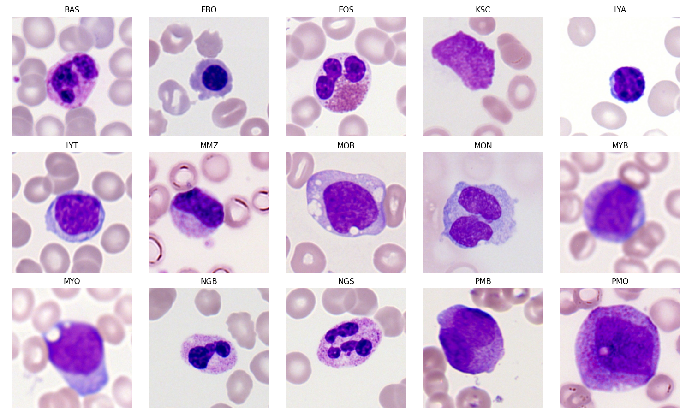
급성골수성백혈병(AML) 진단 과정에서 말초혈액도말 세포를 형태학적으로 분류하는 작업은 지금도 숙련된 병리사의 육안 판독에 크게 의존한다. CellaVision 같은 상용 시스템이 이미 이 병목을 완화하고 있지만, CNN 기반 분류기의 판단 근거를 사람이 이해하기 어렵다는 '블랙박스' 문제는 여전히 임상 도입의 걸림돌로 남아 있다.
이 프로젝트는 정확도 경쟁이 아니라 "왜 그렇게 판단했는가"를 확인할 수 있는 시스템을 목표로 했다. 예측 확률뿐 아니라 Grad-CAM 히트맵으로 모델이 이미지의 어느 영역을 근거로 판단했는지 시각화하고, RAG 기반 LLM이 그 판단을 자연어로 설명한다.
모델 개발
RandomForest·SVM·LogisticRegression 베이스라인에서 시작해 EfficientNetB0 전이학습, 클래스 불균형 대응(class_weight·증강), 상위 레이어 파인튜닝까지 단계적으로 비교했다. 매 단계 Grad-CAM으로 판단 근거를 재검증해 지표 개선이 실제 개선인지 확인하는 과정을 반복했다.
| 단계 | Accuracy | Macro F1 | Weighted F1 |
|---|---|---|---|
| ML 베이스라인 — LogisticRegression | 0.8552 | 0.3552 | 0.8467 |
| DL v1 — EfficientNetB0 (보정 없음) | 0.93 | 0.39 | 0.92 |
| DL v2 — class_weight + 정규화최종 대표 모델 | 0.90 | 0.46 | 0.91 |
| DL v3 — v2 + 희귀 클래스 증강 | 0.88 | 0.44 | 0.89 |
| 파인튜닝 wide (지표만 최고) | 0.8973 | 0.48 | 0.91 |
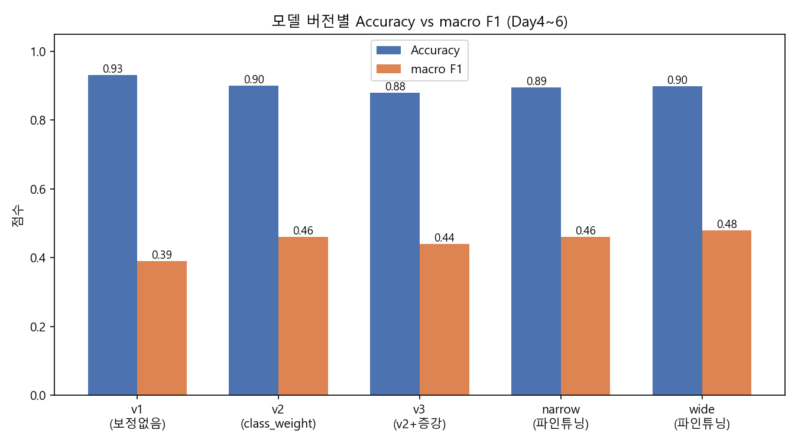
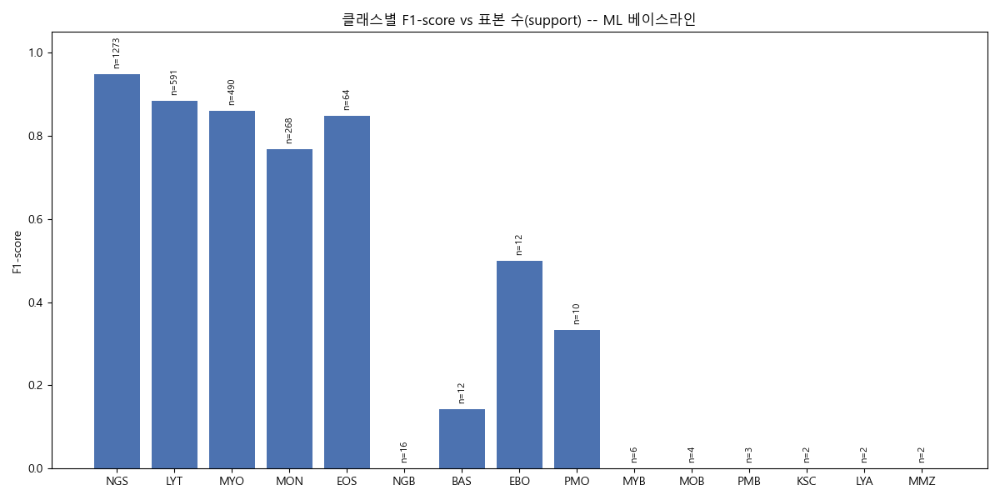
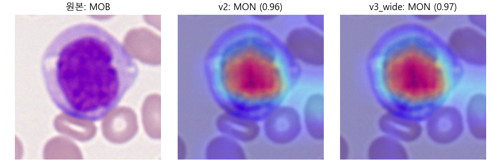
서로 다른 실제 클래스가 공통적으로 MON(단핵구) 쪽으로 쏠리는 고확신 오답이 반복 재현됐다 — MOB→MON 96~97%, MYO→MON 93.8%, BAS→MON 87.3%. macro F1 같은 요약 지표는 이런 "특정 클래스로의 쏠림"을 직접 드러내지 않는다. 정분류 사례는 대체로 형태학적 정의 특징(분엽핵, smudge 텍스처 등)에 정확히 집중하는 것과 뚜렷이 대조된다.
시스템 설계
Spring Boot(화면·이력·오케스트레이션)와 FastAPI(추론·Grad-CAM·LLM 설명)를 nginx 리버스프록시로 묶었다. 브라우저는 nginx만 바라보고, 요청은 Spring Boot → FastAPI 순으로 넘어간다. LLM 설명은 Ollama(로컬)를 먼저 시도하고 실패하면 Gemini API로 자동 폴백한다.
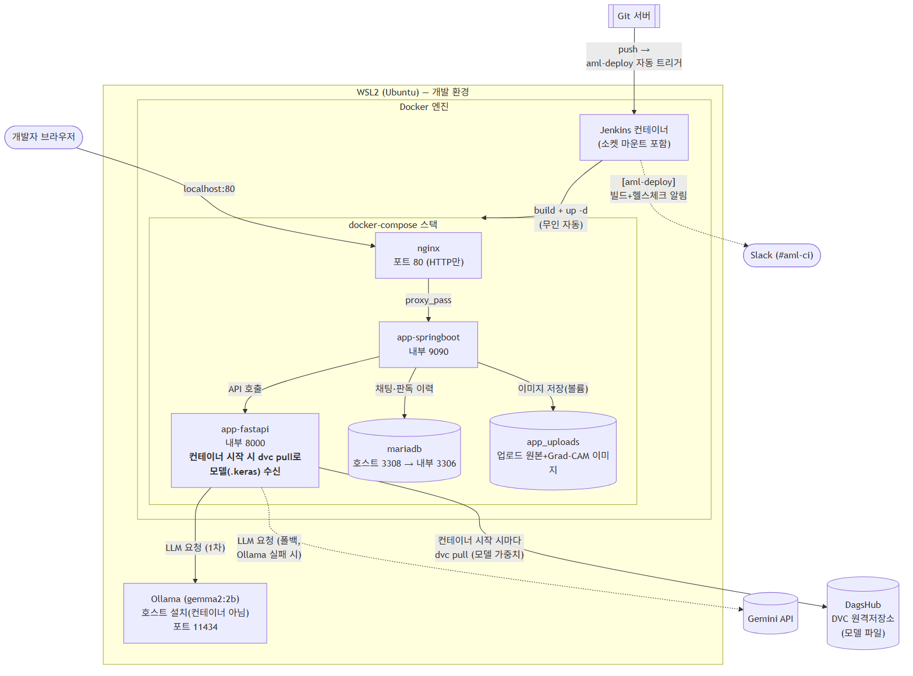
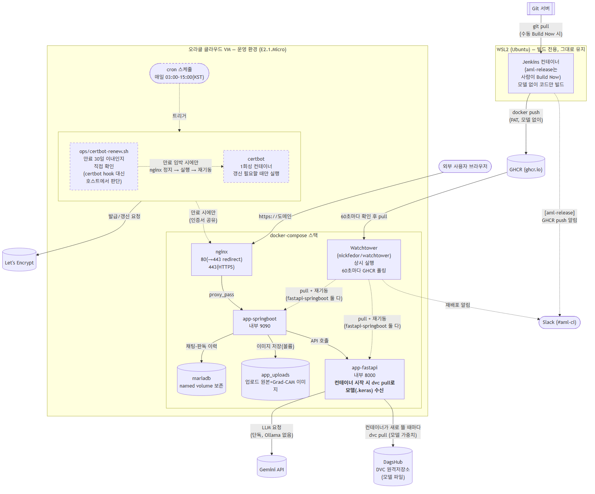
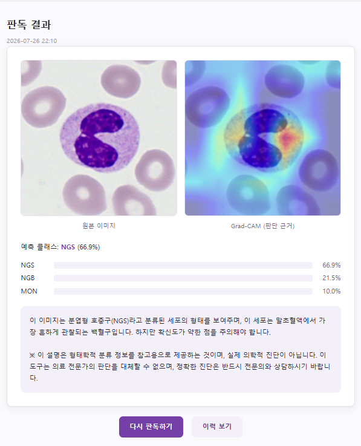
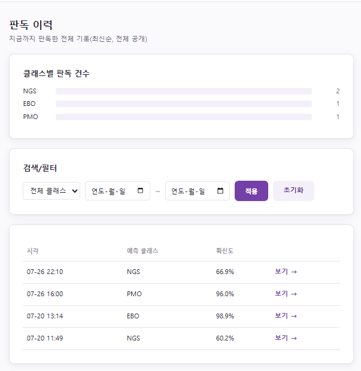
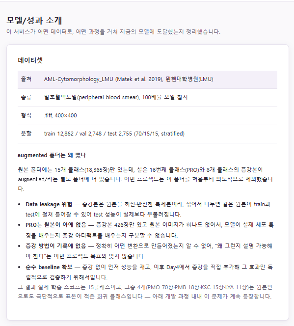
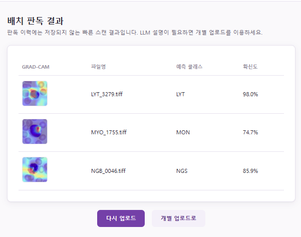
배포 자동화
Jenkins가 GitHub push를 감지해 빌드하고 GHCR(GitHub Container Registry)에 이미지를 올리면, 오라클 클라우드 VM의 Watchtower가 새 이미지를 감지해 자동으로 재기동한다. 학습된 모델 파일은 이미지에 함께 굽지 않고, 컨테이너가 시작될 때 DVC로 DagsHub에서 직접 받아온다 — git 커밋과 배포된 모델 버전이 체크섬으로 항상 1:1 연결된다.
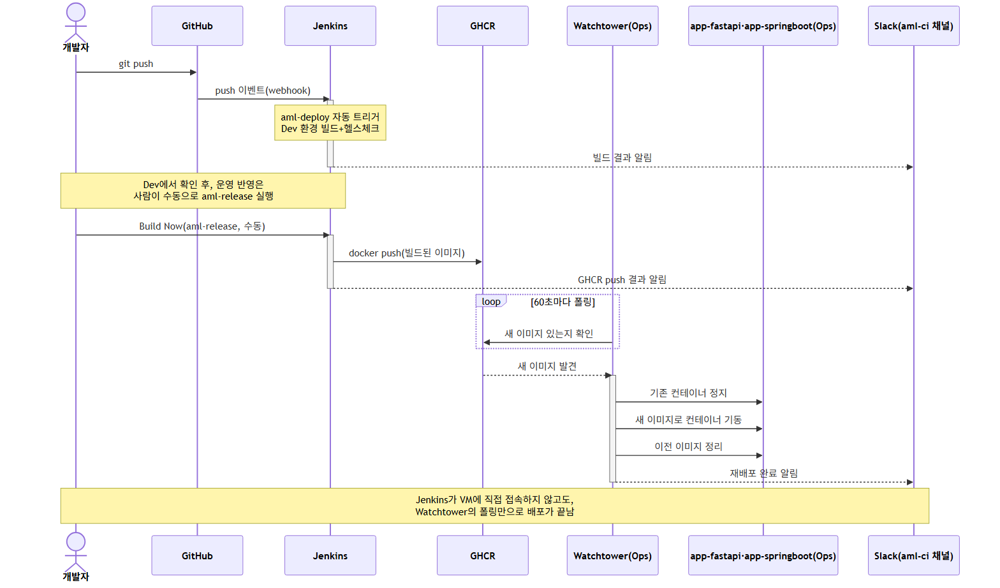
한계와 다음 단계
시스템을 "완결된 도구"로 부풀리기보다, 실제 임상 파이프라인의 어느 단계까지가 이 시스템의 범위이고 어디부터 빠져 있는지를 정확히 아는 것이 더 신뢰할 수 있는 결과물이라고 판단했다.
분류 모델은 업로드 이미지 전체를 벡터 하나로 뭉쳐 클래스 하나만 예측하는 구조라, 세포가 여러 개 섞인 원본 도말 이미지는 다루지 못한다. CellaVision 같은 상용 시스템도 저배율 검출 → 고배율 개별 세포 촬영이라는 별도 단계를 거친 뒤에야 분류기에 넣는다 — 이 시스템은 그 파이프라인의 "검출 다음 단계"(분류+설명)만 담당한다.
softmax 기반 15클래스 분류기는 입력이 어떤 클래스에도 속하지 않아도 "모름(unknown)"을 답할 방법이 구조적으로 없다. 실제로 대상 외 저화질 이미지를 넣었더니 77.4% 확신도로 오분류됐다 — "확실히 맞음"과 "대상 외 입력이라 억지로 끼워맞춤"이 확신도 숫자만으로는 구분되지 않는다.